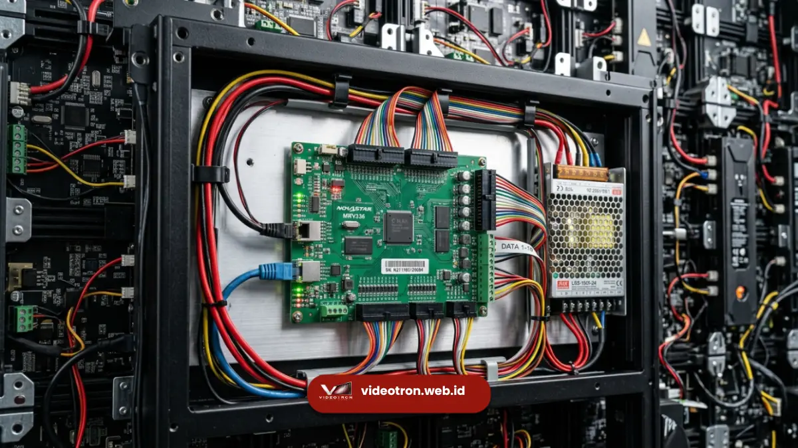

Videotron bekerja dengan mengubah sinyal video digital menjadi cahaya melalui ribuan titik LED yang tersusun dalam modul, diproses oleh sending card dan receiving card, lalu disinkronkan agar tampil sebagai satu gambar utuh.
Poin Penting Cara Kerja Videotron:
- Videotron tersusun dari modul LED berisi ribuan diode kecil sebagai sumber cahaya utama.
- Sinyal video diproses oleh sending card di sisi sumber dan receiving card di sisi panel.
- Setiap piksel dikendalikan oleh driver IC agar warna dan kecerahan sesuai data video asli.
- Refresh rate dan pixel pitch menentukan kehalusan dan kejelasan gambar yang dihasilkan.
- Sistem catu daya dan pendingin menjaga videotron tetap stabil saat beroperasi dalam waktu lama.
- 1. Apa Itu Videotron Secara Teknis?
- 2. Bagaimana Videotron Mengubah Sinyal Video Menjadi Gambar?
- 3. Apa Fungsi Setiap Komponen Utama Videotron?
- 4. Mengapa Pixel Pitch dan Refresh Rate Memengaruhi Kualitas Gambar?
- 5. Apa Perbedaan Cara Kerja Videotron Indoor dan Outdoor?
- 6. Apa Saja Kesalahan Umum dalam Memahami Cara Kerja Videotron?
Apa Itu Videotron Secara Teknis?
Videotron adalah layar besar berbasis modul LED yang menampilkan gambar dan video melalui pengaturan ribuan titik cahaya kecil secara elektronik.
Istilah ini umum digunakan di Indonesia untuk menyebut layar LED skala besar yang dipasang di ruang terbuka maupun dalam ruangan untuk keperluan promosi, informasi, atau hiburan.
Secara struktural, videotron bukan satu layar tunggal, melainkan gabungan dari banyak modul LED kecil yang disusun berjajar membentuk satu bidang layar besar.
Setiap modul memiliki ribuan diode pemancar cahaya yang bekerja bersama-sama untuk membentuk piksel gambar. Karena tersusun dari modul, ukuran videotron dapat disesuaikan dengan kebutuhan, mulai dari beberapa meter persegi hingga menutupi seluruh fasad gedung.
Videotron banyak digunakan untuk kebutuhan seperti panggung konser, backdrop acara korporat, papan iklan luar ruang, hingga informasi publik di ruang terbuka karena kemampuannya menampilkan gambar dengan kecerahan tinggi yang tetap terlihat jelas meski di bawah sinar matahari langsung.
Bagaimana Videotron Mengubah Sinyal Video Menjadi Gambar?
Videotron mengubah sinyal video menjadi gambar melalui tiga tahap utama: pengiriman data dari sumber video, pemrosesan sinyal oleh perangkat kontrol, dan penerangan titik LED sesuai instruksi data tersebut.
Proses ini dimulai dari sumber video, misalnya laptop, media player, atau kamera langsung, yang mengirimkan sinyal ke perangkat bernama sending card.
Sending card bertugas mengubah sinyal video umum menjadi format data yang dapat dipahami oleh sistem videotron, kemudian mengirimkannya melalui kabel jaringan menuju receiving card yang terpasang di balik panel LED.
Setelah data diterima, receiving card mendistribusikan instruksi tersebut ke driver IC pada setiap modul.
Driver IC inilah yang secara langsung mengatur nyala-mati serta tingkat kecerahan tiap titik LED merah, hijau, dan biru sehingga membentuk kombinasi warna sesuai piksel asli pada video sumber.
Proses ini berlangsung puluhan kali per detik sehingga mata manusia melihatnya sebagai gambar bergerak yang halus, bukan kedipan terpisah.
Apa Fungsi Setiap Komponen Utama Videotron?
Setiap komponen videotron memiliki peran berbeda, mulai dari modul LED sebagai sumber cahaya, driver IC sebagai pengatur piksel, hingga sistem kontrol sebagai otak yang menyinkronkan seluruh panel menjadi satu tampilan utuh.
Modul LED
Modul LED adalah unit dasar videotron yang berisi susunan diode pemancar cahaya merah, hijau, dan biru. Kombinasi ketiga warna dasar ini yang menghasilkan variasi jutaan warna pada gambar. Beberapa modul kemudian disusun membentuk satu panel atau cabinet, dan beberapa cabinet disusun kembali membentuk layar videotron berukuran besar.
Driver IC
Driver IC bertugas mengatur arus listrik yang mengalir ke tiap titik LED sehingga tingkat kecerahannya bisa diatur secara presisi. Tanpa driver IC yang bekerja dengan baik, gambar videotron dapat terlihat pecah, berbayang, atau warnanya tidak akurat.
Sending Card dan Receiving Card
Sending card berada di sisi kontrol dan bertugas mengonversi sinyal video menjadi data digital. Receiving card berada di sisi panel dan menerjemahkan data tersebut menjadi instruksi bagi driver IC di tiap modul. Kedua komponen ini bekerja seperti pengirim dan penerima pesan yang harus sinkron agar gambar tidak lag atau terputus.

Proses instalasi dan konfigurasi receiving card di bagian belakang kabinet panel videotron.Catu Daya dan Sistem Pendingin
Videotron membutuhkan catu daya yang stabil karena ribuan titik LED menyala dan padam secara bergantian dalam kecepatan tinggi. Sistem pendingin, baik pasif melalui ventilasi maupun aktif melalui kipas, diperlukan agar suhu modul tetap terkendali sehingga usia pakai LED lebih panjang dan risiko kerusakan berkurang.
Mengapa Pixel Pitch dan Refresh Rate Memengaruhi Kualitas Gambar?
Pixel pitch menentukan jarak antar titik LED sehingga memengaruhi tingkat detail gambar, sedangkan refresh rate menentukan seberapa cepat gambar diperbarui sehingga memengaruhi kehalusan tampilan saat direkam kamera.
Semakin kecil angka pixel pitch, semakin rapat susunan titik LED, sehingga gambar terlihat lebih detail meski dilihat dari jarak dekat.
Sebaliknya, pixel pitch yang lebih besar umumnya digunakan untuk layar yang dilihat dari jarak jauh, seperti videotron di pinggir jalan raya, karena mata manusia dari jarak jauh tidak akan menangkap perbedaan detail sekecil videotron indoor. Pembahasan lebih lengkap mengenai topik ini dapat dibaca pada artikel apa itu pixel pitch.
Refresh rate yang tinggi membuat pergantian gambar berlangsung sangat cepat sehingga mata manusia tidak menangkap kedipan.
Refresh rate yang tinggi juga penting saat videotron akan direkam menggunakan kamera profesional, karena refresh rate rendah cenderung menimbulkan efek garis atau flicker pada hasil rekaman.
Apa Perbedaan Cara Kerja Videotron Indoor dan Outdoor?
Videotron indoor dan outdoor bekerja dengan prinsip dasar yang sama, namun berbeda pada tingkat kecerahan, ketahanan terhadap cuaca, dan kerapatan pixel pitch yang digunakan.
Videotron outdoor dirancang dengan tingkat kecerahan yang jauh lebih tinggi agar gambar tetap terlihat jelas meski terkena sinar matahari langsung, serta dilengkapi lapisan pelindung tambahan agar tahan terhadap hujan dan debu.
Videotron indoor umumnya menggunakan pixel pitch lebih kecil karena jarak pandang penonton yang lebih dekat, namun tidak memerlukan kecerahan setinggi videotron outdoor karena kondisi ruangan yang lebih terkontrol.
Perbedaan mendasar antara videotron dan istilah LED display lainnya dijelaskan lebih lanjut pada artikel perbedaan LED display dan videotron.
Apa Saja Kesalahan Umum dalam Memahami Cara Kerja Videotron?
Kesalahan umum yang sering terjadi adalah menganggap videotron sebagai satu layar tunggal, mengabaikan pentingnya refresh rate, serta memilih pixel pitch tanpa mempertimbangkan jarak pandang penonton.
Banyak orang mengira videotron adalah satu panel besar seperti televisi, padahal videotron adalah gabungan banyak modul kecil yang harus disusun dan disinkronkan dengan presisi.
Kesalahan lain adalah hanya berfokus pada ukuran layar tanpa memperhatikan refresh rate, sehingga hasil rekaman video acara justru terlihat berkedip atau bergaris.
Selain itu, memilih pixel pitch yang terlalu besar untuk videotron indoor jarak dekat dapat membuat gambar terlihat kasar dan kurang tajam.
Cara kerja videotron pada dasarnya adalah proses mengubah sinyal video menjadi cahaya melalui modul LED, driver IC, sending card, dan receiving card yang bekerja secara sinkron.
Memahami proses ini membantu Anda menilai kualitas videotron secara lebih objektif, bukan hanya dari ukuran layar, tetapi juga dari pixel pitch, refresh rate, dan sistem pendukungnya.
Sebelum menyewa atau membeli videotron, pastikan menanyakan spesifikasi komponen-komponen ini kepada penyedia layanan agar hasil tampilan sesuai kebutuhan acara Anda.
Jika Anda sedang mempersiapkan acara dan membutuhkan videotron dengan kualitas gambar tajam serta tim teknis berpengalaman, konsultasikan kebutuhan Anda dengan tim videotron.web.id untuk mendapatkan rekomendasi spesifikasi yang sesuai dengan lokasi dan skala acara Anda.

Hawa Nadira
LED Technology Consultant & Visual Educator
Konsultan dan spesialis solusi display digital berdedikasi tinggi yang fokus membagikan panduan edukatif mengenai penerapan teknologi layar LED videotron untuk kebutuhan interior modern di Indonesia.